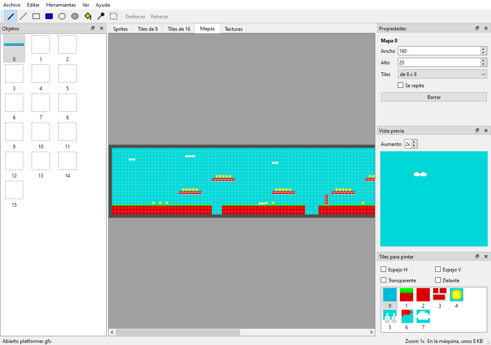

Gráficos
ZX-V no tiene hardware de sprites ni de tiles. En su lugar, la ROM trae un motor gráfico: rutinas que funcionan en el procesador principal y dibujan sprites, mapas de tiles, figuras y suelos con textura en la memoria de vídeo, muy deprisa. El hardware de vídeo pone lo que el software no puede hacer bien: dos páginas de pantalla, scroll por hardware, efectos por línea y remapeo de colores.
Esta página lo explica todo con programas completos. Cada función se describe en detalle en la referencia de la API. Para empezar con C en ZX-V, lee antes la guía del SDK.
Contenido
- Cómo dibuja el motor
- La memoria de vídeo
- Las páginas y el doble buffer
- Dibujar en memoria
- Sprites
- Mapas de tiles
- Scroll por hardware
- Efectos por línea y remapeo de colores
- Modo 7
- Imágenes desde ficheros PNG:
png2gfx.py - El editor de gráficos para el PC:
zxv-gfx - El editor de gráficos de la máquina:
gfxedit - ¿Cuánto cuesta?
Cómo dibuja el motor
Incluye zxv_gfx.h. Todas las funciones de dibujo dibujan en el destino
actual:
- Por defecto, la página de dibujo: una de las dos páginas de vídeo,
que se elige con
zxv_gfx_draw_page(página). Al empezar un programa es la página 0, la visible. - O un bitmap en memoria, que se elige con
zxv_gfx_target(&bitmap).zxv_gfx_target(0)vuelve a la página de dibujo.
Hay unas reglas que valen para todo:
- Los colores van del 0 al 15. En los sprites, los tiles y las copias
con transparencia, el color 8 (
ZXV_TRANSPARENT) es transparente: deja ver lo que había debajo. - Las coordenadas llevan signo y empiezan arriba a la izquierda. Todo se recorta contra el destino, así que puedes dibujar en parte (o del todo) fuera de él sin problema.
zxv_gfx_clip(x0, y0, x1, y1)limita el dibujo a un rectángulo más pequeño (sin incluirx1niy1). Cambiar el destino conzxv_gfx_targetquita el rectángulo de recorte; cambiar la página de dibujo conzxv_gfx_draw_pagelo conserva.- El orden de dibujo es el orden de profundidad: lo último que dibujas queda delante.
- El motor da los mismos píxeles en el emulador y en la máquina real, porque es el mismo código.
Las rutinas sencillas zxv_cls, zxv_plot y las de texto también dibujan
en la página de dibujo, pero no en bitmaps.
La memoria de vídeo
Cada página es un bloque de memoria normal: la página 0 empieza en
ZXV_VRAM0_BASE (0x2000_4000) y la 1 en ZXV_VRAM1_BASE
(0x2001_C000). Los píxeles ocupan 4 bits, dos por byte, línea tras
línea:
| Modo | Píxeles | Bytes por línea |
|---|---|---|
| 0 | 256 × 192 | 128 |
| 1 | 512 × 384 | 256 |
El píxel (x, y) está en el byte y × bytes_por_línea + x / 2: en los 4
bits bajos si x es par y en los altos si es impar. Vista en palabras
de 32 bits, cada palabra tiene 8 píxeles seguidos, el píxel x en los bits
4·(x mod 8) a 4·(x mod 8)+3.
#include "zxv_api.h"
/* Pinta el píxel (x, y) de la página 0 en el modo 0: 128 bytes por línea,
* dos píxeles por byte, el de la izquierda (x par) en los 4 bits bajos. */
static void pset(int x, int y, int c)
{
volatile uint8_t *p = (volatile uint8_t *)(uintptr_t)ZXV_VRAM0_BASE + y * 128 + x / 2;
if (x & 1)
*p = (uint8_t)((*p & 0x0F) | c << 4);
else
*p = (uint8_t)((*p & 0xF0) | c);
}
int main(void)
{
zxv_wait_vblank(); /* acaba de empezar un frame... */
while (*(volatile uint32_t *)(uintptr_t)ZXV_SV_SYSFLAGS & ZXV_SYSF_LINK_BUSY)
; /* ...espera a que se haya enviado */
for (int y = 0; y < 192; y++)
for (int x = 0; x < 256; x++)
pset(x, y, (x ^ y) & 15); /* un dibujo con todos los colores */
while (zxv_key_get() < 0)
zxv_wait_vblank();
return 0;
}
En el modo 0 solo se ven los primeros 24 KB de cada página de 96 KB; el resto es memoria libre para tu programa (salvo con los campos de scroll grandes de Scroll por hardware).
Si conoces el Spectrum: no hay atributos ni tercios: cada píxel tiene su propio color y las líneas van en orden.
Las páginas y el doble buffer
Al empezar cada frame (el VBLANK), el sistema toma la página visible y la envía a la pantalla, junto con los registros de vídeo. Esa copia se ve durante el frame siguiente. Dos consecuencias:
- Escribir en la página que no es la visible siempre es seguro.
- Justo después de un VBLANK, mientras el bit
ZXV_SYSF_LINK_BUSYdeZXV_SV_SYSFLAGSvale 1, el sistema todavía está leyendo la página visible (hasta 1,5 ms en el modo 0 y 6 ms en el modo 1). Si escribes en ella entonces, una parte del cambio puede salir en este frame y otra en el siguiente. El ejemplo de arriba espera a que el bit se ponga a 0 antes de dibujar.
Para animar, lo limpio es el doble buffer: dibuja el frame siguiente en la página oculta, hazla visible y espera al VBLANK.
int visible = 0;
for (;;) {
int hidden = 1 - visible;
zxv_gfx_draw_page(hidden); /* 1. dibuja en la página que nadie ve */
draw_everything();
zxv_set_page(hidden); /* 2. será la visible desde el frame siguiente */
zxv_wait_vblank(); /* 3. espera a ese frame */
visible = hidden;
}
El programa que mueve un sprite de la guía es un
ejemplo completo. Antes de volver al BASIC, deja la página 0 visible y como
página de dibujo (zxv_set_page(0); zxv_gfx_draw_page(0);).
zxv_set_page cambia el registro ZXV_V_PAGE. Todos los registros de
vídeo funcionan igual: los escribes cuando quieras y se aplican en el
siguiente VBLANK.
Dibujar en memoria
Un bitmap (zxv_bitmap) describe una imagen en memoria, con el mismo
formato que la memoria de vídeo:
typedef struct {
uint8_t *pix; /* primer píxel, alineado a 4 bytes */
uint16_t stride; /* bytes por línea, múltiplo de 4 */
uint16_t w, h; /* tamaño en píxeles */
uint16_t reserved;
} zxv_bitmap;
Puedes hacerlo destino y dibujar en él con todas las funciones del motor, y
luego copiar trozos a la pantalla con zxv_gfx_blit o convertirlos en
sprites. Es la forma fácil de hacer gráficos sin ficheros de imagen:
Estela dibuja así sus rocas, minas, explosiones y jefes al arrancar.
Declara los píxeles como un vector de uint32_t para que queden
alineados:
static uint32_t pix[32 * 16 / 8]; /* 32x16 píxeles: 16 bytes por línea */
zxv_bitmap b = { (uint8_t *)pix, 16, 32, 16, 0 };
zxv_gfx_blit(&b, sx, sy, w, h, x, y, opciones) copia el rectángulo
(sx, sy, w, h) de un bitmap en (x, y) del destino. Las opciones pueden
ponerle espejo (ZXV_FLIP_H, ZXV_FLIP_V) y saltarse el color 8
(ZXV_BLIT_TRANSPARENT).
Sprites
Un sprite es un trozo de un bitmap convertido con zxv_spr_prepare en
un formato que se dibuja deprisa, con su máscara de transparencia ya
calculada. Preparas cada sprite una vez y lo dibujas tantas veces como
quieras:
- Tamaño del buffer: 8 + h × ⌈w / 8⌉ × 8 bytes.
zxv_spr_preparecon el buffer aNULLdevuelve ese número. Hasta 1024 × 1024 píxeles. zxv_spr_draw(sprite, x, y, opciones, colores)lo dibuja, con espejo si ponesZXV_FLIP_HoZXV_FLIP_V.colores, si no esNULL, es una tabla de 16 bytes que lo recolorea: el color c se dibuja comocolores[c]. Los píxeles transparentes siguen siéndolo.zxv_spr_draw_scaled(sprite, x, y, w, h, opciones, colores)lo dibuja estirado o encogido a w × h píxeles: para lo que se acerca o se aleja. Cuesta unas tres veces lo que un sprite normal del tamaño final.zxv_spr_collide(a, ax, ay, b, bx, by)devuelve 1 si algún píxel opaco del sprite a en (ax, ay) coincide con uno de b en (bx, by): colisiones píxel a píxel.
#include "zxv_gfx.h"
static uint32_t sheet_pix[32 * 16 / 8]; /* una hoja de 32x16: dos dibujos de 16x16 */
static uint32_t face[(8 + 16 * 2 * 8) / 4]; /* 8 + h * ceil(w/8) * 8 bytes */
static uint32_t ball[(8 + 16 * 2 * 8) / 4];
static void make_sheet(void)
{
zxv_bitmap b = { (uint8_t *)sheet_pix, 16, 32, 16, 0 }; /* 16 bytes por línea = 32 px */
zxv_gfx_target(&b);
zxv_gfx_rect(0, 0, 32, 16, ZXV_TRANSPARENT);
zxv_gfx_circle(7, 7, 7, 6, 1); /* dibujo 0: una cara mirando a la derecha */
zxv_gfx_rect(9, 4, 2, 3, 0);
zxv_gfx_line(8, 11, 12, 10, 2);
zxv_gfx_circle(23, 7, 6, 10, 1); /* dibujo 1: una pelota */
zxv_gfx_target(0);
zxv_spr_prepare(&b, 0, 0, 16, 16, face);
zxv_spr_prepare(&b, 16, 0, 16, 16, ball);
}
int main(void)
{
make_sheet();
zxv_gfx_rect(0, 0, 256, 192, 1);
zxv_spr_draw(face, 16, 16, 0, 0); /* tal cual */
zxv_spr_draw(face, 40, 16, ZXV_FLIP_H, 0); /* con espejo */
zxv_spr_draw(face, 64, 16, ZXV_FLIP_V, 0); /* boca abajo */
static const uint8_t green[16] = { 0, 1, 2, 3, 4, 5, 12, 7, 8, 9, 10, 11, 12, 13, 14, 15 };
zxv_spr_draw(face, 88, 16, 0, green); /* el color 6 sale como 12 */
zxv_spr_draw_scaled(face, 16, 48, 64, 64, 0, 0); /* cuatro veces mayor */
zxv_spr_draw_scaled(face, 96, 48, 8, 8, 0, 0); /* a la mitad */
/* Colisión píxel a píxel: los rectángulos se solapan en los dos casos,
* pero solo en el primero se tocan píxeles opacos. */
int a = zxv_spr_collide(face, 150, 60, ball, 158, 66);
int b = zxv_spr_collide(face, 150, 100, ball, 163, 113);
zxv_spr_draw(face, 150, 60, 0, 0);
zxv_spr_draw(ball, 158, 66, 0, 0);
zxv_spr_draw(face, 150, 100, 0, 0);
zxv_spr_draw(ball, 163, 113, 0, 0);
zxv_gfx_rect(190, 64, 8, 8, a ? 12 : 2); /* verde = se tocan, rojo = no */
zxv_gfx_rect(190, 108, 8, 8, b ? 12 : 2);
while (zxv_key_get() < 0)
zxv_wait_vblank();
return 0;
}
- Un sprite preparado no depende de su bitmap: puedes reutilizar el bitmap para dibujar el siguiente sprite.
- Lleva las posiciones en coma fija (por ejemplo, en 1/16 de píxel) para
que el movimiento lento sea suave, y desplaza a la derecha al dibujar: lo
hacen Estela y
graphics. - Las colisiones con el escenario se miran mejor con
zxv_map_cell.
Mapas de tiles
Un mapa de tiles (mosaico) construye una escena grande con piezas cuadradas pequeñas, los tiles, de 8 × 8 o 16 × 16 píxeles. El mapa es una cuadrícula de celdas; cada celda (16 bits) dice qué tile va ahí y cómo:
| Bits | Significado |
|---|---|
0–11 (ZXV_CELL_TILE) |
Número de tile, de 0 a 4095 |
12 (ZXV_CELL_FLIP_H) |
Espejo horizontal |
13 (ZXV_CELL_FLIP_V) |
Espejo vertical |
14 (ZXV_CELL_TRANSP) |
El color 8 es transparente (si no, el tile es opaco y se dibuja más deprisa) |
15 (ZXV_CELL_PRIO) |
Prioridad: el tile va delante de los sprites |
typedef struct {
const uint16_t *cells; /* las celdas, fila a fila */
uint16_t w, h; /* tamaño en celdas */
const uint8_t *tiles; /* los gráficos de los tiles, seguidos (32 o 128 bytes cada uno) */
uint8_t size; /* 8 o 16 */
uint8_t flags; /* ZXV_MAP_WRAP: el mapa se repite en las dos direcciones */
} zxv_tilemap;
Un tile son simplemente sus píxeles en el formato de la memoria de vídeo, línea a línea: un tile de 8 × 8 ocupa 32 bytes (4 por línea) y uno de 16 × 16, 128 bytes. Por eso una columna de tiles de 8 × 8 dibujada en un bitmap de 8 píxeles de ancho (4 bytes por línea) son justo los datos de tiles que necesita el mapa.
zxv_map_draw(mapa, mx, my, x, y, w, h, filtro)llena el rectángulo (x, y, w, h) del destino con el mapa, empezando por el píxel (mx, my) del mapa. Moviendo mx y my se desplaza la escena, píxel a píxel. Las celdas de fuera de un mapa que no se repite no se dibujan.filtroelige las celdas:ZXV_MAP_ALL,ZXV_MAP_BACK(sin prioridad) oZXV_MAP_FRONT(con prioridad). Un frame con escenario por delante de los sprites es: el mapa conZXV_MAP_BACK, los sprites y el mapa conZXV_MAP_FRONT.zxv_map_cell(mapa, px, py)devuelve la celda que hay en el píxel (px, py) del mapa: la forma de saber si hay una pared donde quiere ir tu personaje.
#include "zxv_gfx.h"
#define MAP_W 64 /* celdas: 64 x 24 de 8x8 píxeles */
#define MAP_H 24
static uint32_t tile_pix[3 * 8]; /* 3 tiles de 8x8: 32 bytes cada uno */
static uint16_t cells[MAP_W * MAP_H];
static const zxv_tilemap level = { cells, MAP_W, MAP_H, (const uint8_t *)tile_pix, 8, ZXV_MAP_WRAP };
enum { SKY, BRICK, GRASS };
static void make_level(void)
{
zxv_bitmap b = { (uint8_t *)tile_pix, 4, 8, 3 * 8, 0 }; /* los tiles, uno debajo de otro */
zxv_gfx_target(&b);
zxv_gfx_rect(0, 0, 8, 8, 5); /* SKY: cian */
zxv_gfx_rect(0, 8, 8, 8, 2); /* BRICK: rojo con argamasa */
zxv_gfx_line(0, 11, 7, 11, 7);
zxv_gfx_line(3, 8, 3, 11, 7);
zxv_gfx_line(7, 12, 7, 15, 7);
zxv_gfx_rect(0, 16, 8, 8, 4); /* GRASS: verde */
zxv_gfx_line(0, 16, 7, 16, 12);
zxv_gfx_target(0);
for (int y = 0; y < MAP_H; y++)
for (int x = 0; x < MAP_W; x++) {
uint16_t t = SKY;
if (y >= 20)
t = BRICK;
else if (y == 19)
t = GRASS;
else if (y == 12 && (x / 6) % 3 == 0)
t = BRICK; /* plataformas en el aire */
cells[y * MAP_W + x] = t;
}
}
int main(void)
{
make_level();
int scroll = 0, visible = 0;
while (zxv_key_get() < 0) {
int hidden = 1 - visible;
zxv_gfx_draw_page(hidden);
/* La ventana de 256x192 del mapa que empieza en el píxel (scroll, 0). */
zxv_map_draw(&level, scroll, 0, 0, 0, 256, 192, ZXV_MAP_ALL);
/* ¿Hay un ladrillo en el centro de la pantalla, en la fila de las plataformas? */
uint16_t c = zxv_map_cell(&level, scroll + 128, 12 * 8 + 4);
zxv_gfx_rect(124, 80, 8, 8, (c & ZXV_CELL_TILE) == BRICK ? 15 : 0);
zxv_set_page(hidden);
zxv_wait_vblank();
visible = hidden;
scroll++; /* el mapa se repite: no se acaba nunca */
}
zxv_set_page(0);
zxv_gfx_draw_page(0);
return 0;
}
Redibujar la pantalla entera de tiles en cada frame está bien en el modo 0 (cerca del 11 % del frame si el mapa no cae en tiles enteros). Para escenas grandes, y en el modo 1, es mejor dejar el scroll al hardware.
Scroll por hardware
Los registros ZXV_V_SCROLL_X y ZXV_V_SCROLL_Y (de 16 bits) mueven la
imagen dentro de la página de forma circular: lo que sale por un lado
entra por el otro. No cuestan nada: lo hace el hardware de vídeo.
En el modo 0, la página puede ser además más grande que la pantalla, y
la pantalla pasa a ser una ventana que mueves sobre ella. El registro
ZXV_V_VSIZE elige el tamaño de las dos páginas:
ZXV_V_VSIZE |
Página | Bytes por línea | Para |
|---|---|---|---|
ZXV_VSIZE_SCREEN (0) |
256 × 192 | 128 | Lo normal |
ZXV_VSIZE_2X2 (1) |
512 × 384 | 256 | Scroll en las dos direcciones |
ZXV_VSIZE_WIDE (2) |
1024 × 192 | 512 | Scroll horizontal |
ZXV_VSIZE_TALL (3) |
256 × 768 | 128 | Scroll vertical |
Con una página grande se usan los 96 KB enteros, y el sistema tarda en
enviarla lo mismo que en el modo 1 (ZXV_SYSF_LINK_BUSY dura hasta 6 ms).
Las funciones de dibujo siguen al nuevo tamaño: tras cambiar
ZXV_V_VSIZE, la página de dibujo mide 512 × 384, 1024 × 192, etc.
#include "zxv_gfx.h"
#define REG8(a) (*(volatile uint8_t *)(uintptr_t)(a))
#define REG16(a) (*(volatile uint16_t *)(uintptr_t)(a))
int main(void)
{
REG8(ZXV_V_VSIZE) = ZXV_VSIZE_2X2; /* página de 512 x 384 en el modo 0 */
zxv_gfx_draw_page(0); /* el motor sigue al nuevo tamaño */
zxv_gfx_rect(0, 0, 512, 384, 1);
for (int i = 0; i < 40; i++) /* dibuja el campo entero una vez */
zxv_gfx_circle((i * 97) % 512, (i * 61) % 384, 10 + i % 20, 2 + i % 13, 1);
int x = 0, y = 0;
while (zxv_key_get() < 0) {
zxv_wait_vblank();
x = (x + 1) % 512; /* la ventana da la vuelta al campo */
y = (y + 1) % 384;
REG16(ZXV_V_SCROLL_X) = (uint16_t)x; /* sin redibujar: lo hace el vídeo */
REG16(ZXV_V_SCROLL_Y) = (uint16_t)y;
}
REG16(ZXV_V_SCROLL_X) = 0;
REG16(ZXV_V_SCROLL_Y) = 0;
REG8(ZXV_V_VSIZE) = ZXV_VSIZE_SCREEN;
return 0;
}
Para un nivel más largo que la página, usa el truco de las consolas: como
el scroll es circular, dibuja solo la columna de tiles que va a aparecer,
justo fuera de la ventana, y sigue avanzando. El ejemplo
scroll hace exactamente eso en
una página de 1024 × 192: cada columna nueva de 8 × 144 píxeles cuesta
menos del 1 % de un frame.
Efectos por línea y remapeo de colores
La tabla por línea
La tabla por línea (ZXV_LINE_TABLE) deja que cada línea de la imagen
tenga su propio color de borde, su tabla de colores, su scroll horizontal
e incluso que elija qué línea de la página enseña. Con ella se hacen el
parallax (cada franja del escenario se desplaza a su velocidad), las
pantallas partidas, el agua, las carreteras y las rayas del borde, sin
cambiar registros a mitad de frame.
Tiene una entrada de 8 bytes por cada línea del cuadro entero, borde
incluido: 240 líneas en el modo 0 (las 24 primeras son el borde de
arriba, así que la línea y de la pantalla es la entrada 24 + y) y 480
en el modo 1 (48 de borde arriba). En zxv.h, ZXV_FRAME_LINES(modo) y
ZXV_BORDER_LINES(modo).
| Desplazamiento | Tamaño | Campo | Valor «como siempre» |
|---|---|---|---|
ZXV_LT_BORDER (0) |
8 bits | Color del borde de esta línea | 0xFF |
ZXV_LT_REMAP (1) |
8 bits | Tabla de colores de esta línea (0–3) | 0xFF |
ZXV_LT_SCROLL_X (2) |
16 bits | Scroll horizontal de esta línea | 0xFFFF |
ZXV_LT_SRC_LINE (4) |
16 bits | Línea de la página que se ve aquí | 0xFFFF |
| 6 | 16 bits | Reservado: escribe 0 |
La tabla se usa mientras esté a 1 el bit ZXV_VFLAG_LINETAB de
ZXV_V_FLAGS. Como la página visible, se lee justo después de cada
VBLANK: cámbiala cuando ZXV_SYSF_LINK_BUSY se ponga a 0.
El remapeo de colores
Hay cuatro tablas de remapeo de 16 bytes en ZXV_REMAP_TABLES. El
registro ZXV_V_REMAP elige por cuál pasa la pantalla: un píxel de color
v se ve del color tabla[v]. La tabla 0 se suele dejar como está (cada
color como él mismo). Cambiar una tabla cambia los colores de toda la
pantalla de golpe, sin tocar la memoria de vídeo: fundidos, destellos,
ciclos de color.
Cada tabla tiene además su paleta: los 16 colores RGB565 que se ven para
cada índice, en ZXV_PALETTE(t). Al empezar son los de siempre; cambiar uno
da cualquier color (ZXV_RGB(r, g, b), de 0 a 255 por componente) a todo lo
que está dibujado con él. Con la tabla por línea, cada franja de la pantalla
puede tener sus 16 colores:
volatile uint16_t *pal1 = (volatile uint16_t *)(uintptr_t)ZXV_PALETTE(1);
pal1[2] = ZXV_RGB(255, 128, 0); /* el rojo de la tabla 1, naranja */
El índice 8 sigue siendo transparente para los sprites y los tiles aunque la paleta le dé otro color.
Este programa enseña las dos cosas: rayas en el borde con la tabla por línea, y seis franjas cuyos colores giran a través de la tabla 1:
#include "zxv_gfx.h"
#define REG8(a) (*(volatile uint8_t *)(uintptr_t)(a))
#define REG32(a) (*(volatile uint32_t *)(uintptr_t)(a))
/* Tras un VBLANK el sistema todavía lee un momento la página visible, la
* tabla por línea y las de remapeo: espera a que termine. */
static void wait_frame(void)
{
zxv_wait_vblank();
while (REG32(ZXV_SV_SYSFLAGS) & ZXV_SYSF_LINK_BUSY)
;
}
int main(void)
{
volatile uint8_t *remap1 = (volatile uint8_t *)(uintptr_t)(ZXV_REMAP_TABLES + 16);
volatile uint8_t *lines = (volatile uint8_t *)(uintptr_t)ZXV_LINE_TABLE;
zxv_gfx_rect(0, 0, 256, 192, 0);
for (int i = 0; i < 6; i++) /* seis franjas de los colores 1 a 6 */
zxv_gfx_rect(0, 40 + i * 16, 256, 16, 1 + i);
/* Tabla por línea: cada línea del cuadro de 240 (primero 24 de borde)
* tiene su color de borde; el resto de la entrada es «como siempre». */
for (int l = 0; l < ZXV_FRAME_LINES(0); l++) {
volatile uint8_t *e = lines + l * ZXV_LINE_ENTRY_SIZE;
e[ZXV_LT_BORDER] = (uint8_t)(9 + (l / 8) % 7); /* rayas brillantes */
e[ZXV_LT_REMAP] = 0xFF;
e[ZXV_LT_SCROLL_X] = e[ZXV_LT_SCROLL_X + 1] = 0xFF;
e[ZXV_LT_SRC_LINE] = e[ZXV_LT_SRC_LINE + 1] = 0xFF;
}
REG8(ZXV_V_FLAGS) = ZXV_VFLAG_LINETAB;
REG8(ZXV_V_REMAP) = 1; /* la pantalla pasa por la tabla 1 */
int frame = 0;
while (zxv_key_get() < 0) {
wait_frame();
if (frame % 8 == 0) /* gira los colores 1..6: las franjas se mueven */
for (int v = 1; v <= 6; v++)
remap1[v] = (uint8_t)(1 + (v - 1 + frame / 8) % 6);
frame++;
}
wait_frame(); /* recoge antes de volver */
REG8(ZXV_V_FLAGS) = 0;
REG8(ZXV_V_REMAP) = 0;
for (int v = 0; v < 16; v++)
remap1[v] = (uint8_t)v;
return 0;
}
El ejemplo scroll usa el campo
de scroll de la tabla por línea para el parallax: las montañas de arriba
van a la mitad de velocidad que el suelo.
Modo 7
El modo 7 (se llama así por el modo de la SNES que lo hizo famoso) dibuja una textura en cada línea con su propia posición y su paso: girada, ampliada o en perspectiva, como un suelo visto desde arriba.
- La textura (
zxv_m7tex) es un cuadrado de 2^log2sizetexels de lado, de 2 × 2 (log2size1) a 1024 × 1024 (10), con un byte por texel (0–15). Como un programa tiene 248 KB de RAM de usuario, en la práctica una textura en la RAM llega hasta 256 × 256 (log2size8, 64 KB). Conwrap= 1 se repite sin fin; con 0, fuera de ella se ve el colorout. - Cada línea (
zxv_m7line) lleva la posición en la textura (u, v) de su primer píxel y el paso (du, dv) por píxel, en coma fija 16.16 (65536 = un texel). zxv_m7_camera(líneas, n, &cámara)calcula las líneas de un suelo visto desde una cámara: posición, altura, ángulo (0x10000 es una vuelta entera), distancia focal y la línea de la pantalla donde está el horizonte. Las líneas por encima del horizonte quedan vacías.zxv_m7_draw(&textura, líneas, y, n)dibujanlíneas en el destino a partir de la líneay.
#include "zxv_gfx.h"
static uint8_t texels[64 * 64]; /* una textura de 64x64, un byte por texel */
static zxv_m7line rows[192]; /* una transformación por línea de pantalla */
int main(void)
{
for (int y = 0; y < 64; y++) /* un tablero de ajedrez */
for (int x = 0; x < 64; x++)
texels[y * 64 + x] = ((x / 8) ^ (y / 8)) & 1 ? 12 : 4;
const zxv_m7tex tex = { texels, 6, 1, 0, 0 }; /* 2^6 = 64, se repite */
int visible = 0;
for (int frame = 0; zxv_key_get() < 0; frame++) {
int hidden = 1 - visible;
zxv_gfx_draw_page(hidden);
zxv_gfx_rect(0, 0, 256, 72, 9); /* el cielo */
zxv_m7cam cam = {
.x = frame << 15, .y = 0, /* coma fija 16.16: avanza por x */
.height = 16 << 16,
.angle = frame * 64, /* 0x10000 es una vuelta entera */
.focal = 128 << 16,
.horizon = 64, /* línea de la pantalla del horizonte */
};
zxv_m7_camera(rows, 192, &cam); /* las líneas 0..64 quedan vacías */
zxv_m7_draw(&tex, rows + 72, 72, 120); /* dibuja las líneas 72..191 */
zxv_set_page(hidden);
zxv_wait_vblank();
visible = hidden;
}
zxv_set_page(0);
zxv_gfx_draw_page(0);
return 0;
}
El modo 7 cuesta unas 15 instrucciones por píxel: la pantalla entera en el
modo 0 es un cuarto del frame, y en el modo 1 no cabe en un frame, así que
dibuja solo el suelo. El ejemplo graphics
pone objetos sobre el suelo con sprites escalados, proyectados con la
misma cámara.
Imágenes desde ficheros PNG: png2gfx.py
Dibujar todo con código va bien para las figuras, pero para el pixel art
de verdad querrás un programa de dibujo. sdk/tools/png2gfx.py convierte
imágenes PNG en un fichero .gfx: sprites, tiles, niveles enteros
(cortados en tiles, aprovechando los repetidos) y texturas del modo 7. Es
el formato que carga el BASIC con LOAD "nombre" GRAPHICS, y tu programa
en C también puede leerlo. Solo necesita Python 3.
python3 sdk/tools/png2gfx.py art.gfx --sprites 0 sheet.png 16,16 --level 0 8 level.png --wrap 0
python3 sdk/tools/png2gfx.py --list art.gfx
La primera línea corta sheet.png en sprites de 16 × 16 numerados desde
el 0, y convierte level.png en el mapa 0 de tiles de 8 × 8, que se
repite. La segunda enseña lo que hay en el fichero: sprite 0: 16 x 16,
tiles de 8 x 8: 4, mapa 0: 8 x 4 celdas.... Habla en español si tu
sistema está en español, y si no, en inglés.
| Orden | Efecto |
|---|---|
--sprite N IMAGEN [X,Y,AN,AL] |
El sprite N es la imagen, o ese rectángulo de ella |
--sprites N IMAGEN AN,AL |
Una hoja de sprites: los sprites N, N+1... de AN × AL, fila a fila |
--tiles S N IMAGEN [X,Y,AN,AL] |
La imagen (o el rectángulo) cortada en tiles de S × S (8 o 16), numerados desde N |
--level M S IMAGEN |
Un nivel entero: se corta en tiles de S × S aprovechando los repetidos (con --flip, también los espejados); el mapa M queda con su distribución. Las celdas de los tiles con píxeles transparentes llevan el bit de transparencia |
--map M S FICHERO.csv |
El mapa M a partir de un CSV con el valor de cada celda |
--texture N IMAGEN [C] |
La textura N (un cuadrado de lado potencia de 2, de 2 a 256); se repite o, con C, fuera es del color C |
--wrap M |
El mapa M se repite |
--screen N IMAGEN [B] |
La pantalla N (como las de SAVE "x" SCREEN$ y las pantallas de carga): de 256 × 192 (modo 0) o 512 × 384 (modo 1), o el cuadro entero (320 × 240 o 640 × 480) con el borde del color de su esquina; B, el color del borde. Con colores que no son los de siempre (16 como mucho), lleva su paleta |
--flip |
--level aprovecha también los tiles espejados |
--key RRGGBB |
Ese color es transparente (además de los píxeles con alfa menor que 128) |
Cada píxel toma el color de ZX-V más cercano, con un aviso si no era
exacto. Dibuja con los 15 colores exactos: cada componente a 00, D7 o FF
(por ejemplo, D70000 es el rojo y FF0000 el rojo brillante). Las
pantallas conservan sus colores: con colores que no son los de siempre (16
como mucho), la pantalla lleva su paleta.
Leer un fichero .gfx en C
Un fichero .gfx empieza con las 4 letras ZXVG, un byte de versión (1),
un byte a cero y el número de objetos (16 bits). Cada objeto tiene una
cabecera de 8 bytes (tipo, 0, número en 16 bits y longitud de sus datos en
32 bits) seguida de sus datos:
| Tipo | Objeto | Datos |
|---|---|---|
| 1 | Sprite | ancho y alto (16 bits cada uno), y sus píxeles: ⌈ancho / 2⌉ bytes por línea |
| 2 | Tiles de S × S (S es el número del objeto) | cuántos (16 bits), 0 (16 bits) y los tiles (32 o 128 bytes cada uno) |
| 3 | Mapa | ancho y alto (16 bits cada uno), lado del tile y repetición (bytes), 0 (16 bits) y las celdas (16 bits cada una) |
| 4 | Textura | log2 del lado, repetición, color de fuera, 0 (bytes) y los texels (un byte cada uno) |
| 5 | Pantalla | modo (0 o 1), color del borde, marcas (bit 0: lleva paleta) y 0 (bytes); si lleva paleta, sus 16 colores RGB565 (32 bytes); y los píxeles de la página, como en la VRAM (24.576 bytes en modo 0, 98.304 en modo 1) |
Todos los números van con el byte bajo primero. Para leerlos, el SDK trae
una pequeña biblioteca, zxv_gfxfile.h (con gfxfile.c). El fichero
puede estar donde sea: leído de la tarjeta con zxv_file_load o dentro del
programa. Como los objetos de dentro del fichero no van alineados, cada
función copia el suyo en un buffer del programa, alineado como lo quiere el
motor, y devuelve los bytes que necesita ese buffer (0 si el objeto no está;
con el buffer a NULL, solo lo dice):
| Función | Lo que hace |
|---|---|
zxv_gfxf_open(&f, datos, tamaño) |
1 si es un .gfx bien formado (mira todos los objetos); deja f listo |
zxv_gfxf_sprite(&f, n, &bitmap, buf, sitio) |
El sprite n como bitmap, para zxv_spr_prepare, zxv_gfx_blit o zxv_gfx_target |
zxv_gfxf_tiles(&f, lado, buf, sitio, &cuántos) |
Los tiles de 8 o de 16 |
zxv_gfxf_map(&f, n, &mapa, tiles, buf, sitio) |
El mapa n: sus celdas en buf y, en el zxv_tilemap, los tiles que se le den |
zxv_gfxf_texture(&f, n, &textura, buf, sitio) |
La textura n de modo 7 |
zxv_gfxf_screen(&f, n, &modo, &borde, buf, sitio) |
La pantalla n: sus píxeles en buf, como una página de la VRAM (por ejemplo, la que no se ve, para cambiar de página en el VBLANK) |
zxv_gfxf_screen_palette(&f, n, pal) |
Los 16 colores RGB565 con que se veía la pantalla n, para ponerlos en una paleta (ZXV_PALETTE(t)): 1 si los lleva; si no, 0 y los de siempre |
zxv_gfxf_find(&f, clase, n, &longitud) |
Los datos de un objeto tal cual están en el fichero (clase: ZXV_GFXF_SPRITE 1, ZXV_GFXF_TILES 2, ZXV_GFXF_MAP 3, ZXV_GFXF_TEXTURE 4, ZXV_GFXF_SCREEN 5) |
Este programa carga art.gfx de la carpeta actual, prepara los dos sprites
y el mapa (con tiles de 8), y los desplaza:
#include "zxv_gfxfile.h"
static uint8_t file[16 * 1024]; /* el fichero .gfx entero */
static uint32_t pix[4096]; /* un sprite, alineado, para prepararlo */
static uint32_t face[1024], ball[1024]; /* los sprites preparados */
static uint32_t tiles[64 * 32 / 4]; /* hasta 64 tiles de 8x8 */
static uint16_t cells[1024];
/* El sprite num del fichero, preparado en out. */
static int load_sprite(const zxv_gfxfile *f, int num, void *out, uint32_t room)
{
zxv_bitmap b;
uint32_t n = zxv_gfxf_sprite(f, num, &b, pix, sizeof(pix));
if (!n || n > sizeof(pix) || zxv_spr_prepare(&b, 0, 0, b.w, b.h, NULL) > room)
return 0;
zxv_spr_prepare(&b, 0, 0, b.w, b.h, out);
return 1;
}
int main(void)
{
zxv_gfxfile f;
zxv_tilemap level;
int n = zxv_file_load("art.gfx", file, sizeof(file)); /* si cabe en 'file' */
if (n < 0 || !zxv_gfxf_open(&f, file, (uint32_t)n) ||
!load_sprite(&f, 0, face, sizeof(face)) || !load_sprite(&f, 1, ball, sizeof(ball)))
zxv_report_error(0, "No se puede cargar art.gfx"); /* vuelve al BASIC con este informe */
uint32_t t = zxv_gfxf_tiles(&f, 8, tiles, sizeof(tiles), NULL);
uint32_t c = zxv_gfxf_map(&f, 0, &level, tiles, cells, sizeof(cells));
if (!t || t > sizeof(tiles) || !c || c > sizeof(cells))
zxv_report_error(0, "El mapa de art.gfx no cabe");
int visible = 0;
for (int frame = 0; zxv_key_get() < 0; frame++) {
int hidden = 1 - visible;
zxv_gfx_draw_page(hidden);
zxv_map_draw(&level, frame, 0, 0, 0, 256, 192, ZXV_MAP_ALL);
zxv_spr_draw(face, 60, 120, 0, NULL);
zxv_spr_draw(ball, 100 + frame % 100, 60, 0, NULL);
zxv_set_page(hidden);
zxv_wait_vblank();
visible = hidden;
}
zxv_set_page(0);
zxv_gfx_draw_page(0);
return 0;
}
Para compilarlo, añade $(SDK)/gfxfile.c a los ficheros del programa (en
el Makefile de arriba, SOURCES := hello.c $(SDK)/gfxfile.c), y pon
art.gfx en la misma carpeta de la tarjeta SD que el programa. Los juegos
Route 128 y
Estela de los ejemplos leen así sus
gráficos: llevan su .gfx dentro del programa y, si en la tarjeta hay
otro, usan ese.
El editor de gráficos para el PC: zxv-gfx
Para dibujar en el PC, los paquetes del emulador traen zxv-gfx, un
editor de los mismos ficheros .gfx para Windows y Linux (en la AppImage,
./ZX-V-x86_64.AppImage zxv-gfx). Es software libre con la licencia MIT: su
código está en sdk/tools/gfx, y se compila solo
con Qt 6 (cmake -S sdk/tools/gfx -B build-gfx). Habla español o inglés,
el del sistema (o el que se le pida: zxv-gfx --lang en).

- Una pestaña por clase de objeto (sprites, tiles de 8 y de 16, mapas, texturas y pantallas) y, a la izquierda, sus miniaturas; doble clic en un hueco vacío lo crea. A la derecha, la paleta, las propiedades (el tamaño, la repetición, el color de fuera…) y una vista previa: los sprites animados con los siguientes, los tiles repetidos 3 × 3 para ver si casan, y las texturas también como suelo del modo 7 (Ver > La textura en el modo 7).
- Para dibujar: lápiz, línea, caja, elipse (vacías o llenas), rellenar, coger un color y seleccionar. Lo seleccionado se mueve arrastrándolo, se espeja, se gira y se desplaza; Enter lo deja y Esc lo devuelve a su sitio. El botón izquierdo pinta con un color y el derecho con otro (X los cambia).
- Los mapas se pintan con el tile elegido en el panel Tiles para pintar y sus atributos (los dos espejos, transparente y delante); el botón derecho pone el 0. Doble clic en un tile del panel lo abre para editarlo.
- Las pantallas pueden tener sus propios colores: doble clic en un color de la paleta lo cambia por cualquier otro, y la pantalla pasa a llevar su paleta.
- Copiar y pegar con el portapapeles del sistema: lo copiado se pega en otros programas como imagen, y una imagen de otro programa se pega con los colores de ZX-V (el más cercano a cada píxel).
- Importar una imagen (Archivo > Importar, o arrastrándola a la ventana):
un sprite, una hoja de sprites, tiles, un nivel entero (los tiles,
aprovechando los repetidos y, si se quiere, los espejados, y el mapa), una
textura o una pantalla. Da lo mismo que
png2gfx.pycon las mismas órdenes. Exportar como PNG guarda el objeto, el juego de tiles o el mapa dibujado. - Deshacer y rehacer sin límite, zoom con Ctrl y la rueda, y el botón central para arrastrar la vista. La barra de estado dice lo que ocuparía todo en la máquina.
El editor de gráficos de la máquina: gfxedit
Sin salir de la máquina: LOAD "ROM:gfxedit" (o el gfxedit.zxv de
sdk/build) abre un editor de los mismos ficheros .gfx, que se usa con
el ratón. Arriba hay una pestaña por cada clase de gráfico:
| Pestaña | Qué edita |
|---|---|
| Sprites | Los 256 sprites, de 1 × 1 a 1024 × 1024 píxeles (el color 8 es el transparente) |
| Tiles 8, Tiles 16 | Los dos juegos de tiles: el tile ampliado, el mismo repetido 3 × 3 para ver si casa con sus vecinos y debajo todo el juego, para elegir |
| Mapas | Los 16 mapas: se pintan con el tile elegido y sus atributos (los dos espejos, el 8 transparente y delante), como con MAP POKE |
| Texturas | Las 4 texturas del modo 7: su lado, si se repiten y el color de fuera |
Las pantallas (las de SAVE "x" SCREEN$ y las pantallas de carga) no se
editan aquí, sino en zxv-gfx: al cargar un fichero se las salta, y al
grabarlo no las lleva.
- Para dibujar: lápiz, línea, caja, caja llena, rellenar y coger un color de la imagen. El botón izquierdo pinta con un color de la paleta y el derecho, con otro.
- Con la imagen entera: los espejos, girarla, moverla (lo que sale por un lado entra por el otro), vaciarla, copiarla y pegarla.
- Los sprites se animan: el panel enseña el sprite y los siguientes, uno tras otro, para ver una animación hecha con sprites seguidos.
- Deshacer con U (o Ctrl+Z); el zoom, con la rueda o con + y -; RePág y AvPág, el objeto anterior y el siguiente; Tab, la pestaña siguiente.
- Cargar y Grabar usan la tarjeta. Si se arranca desde
ROM:, graba enSD:.
Caben unos 112 KB de gráficos a la vez. Su código está en
sdk/examples/gfxedit: store.c lee y
escribe los .gfx y tu programa puede usarlo tal cual.
¿Cuánto cuesta?
A 60 frames por segundo el procesador tiene unos 2,4 millones de ciclos por frame. Estas cifras se midieron en la máquina real:
| Operación | Modo 0 (256 × 192) | Modo 1 (512 × 384) |
|---|---|---|
| Borrar la página | 1,2 % de un frame | 2,7 % |
| Pantalla entera de tiles de 8 × 8, alineada | 3,9 % | 11,7 % |
| Pantalla entera de tiles de 8 × 8, desplazada cualquier número de píxeles | 13,1 % | 48 % |
| Pantalla entera de tiles de 16 × 16, alineada | 2,2 % | 6,4 % |
| 100 sprites de 16 × 16 | 6,1 % | 5,6 % |
| 100 sprites de 16 × 16 escalados a 32 × 32 | 63 % | 62 % |
| 100 sprites de 16 × 16 escalados a 12 × 12 | 28 % | 27 % |
| Modo 7, pantalla entera | 31 % | 121 % |
| 100 triángulos de unos 470 píxeles | 29 % | 28 % |
| 100 líneas al azar | 14 % | 25 % |
- Con el scroll por hardware el escenario no se redibuja: una columna nueva de 8 × 144 píxeles cuesta el 0,8 % en el modo
- En el modo 1 es casi obligatorio.
- Los tiles opacos (sin el bit de transparencia) se dibujan más deprisa que los transparentes.
- Los sprites escalados son para unos pocos objetos que se acercan, no para todos.